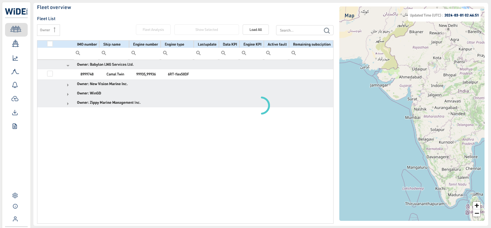
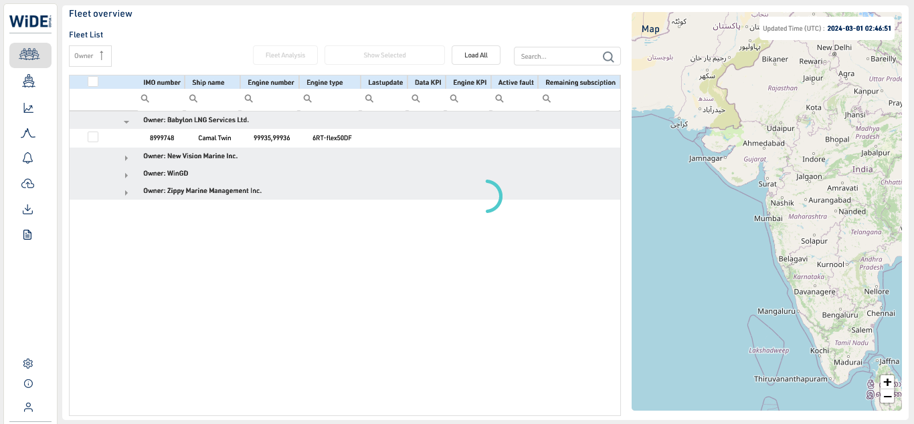
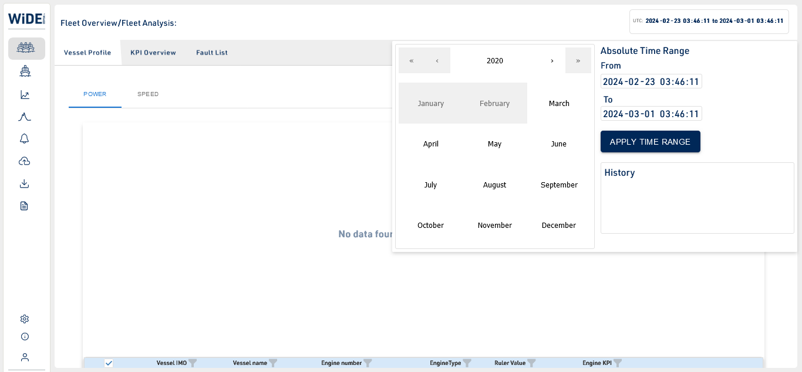
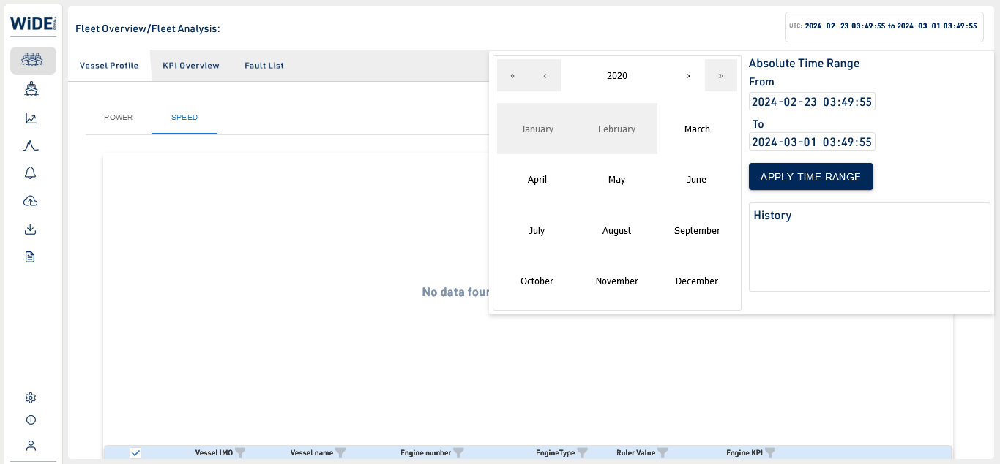
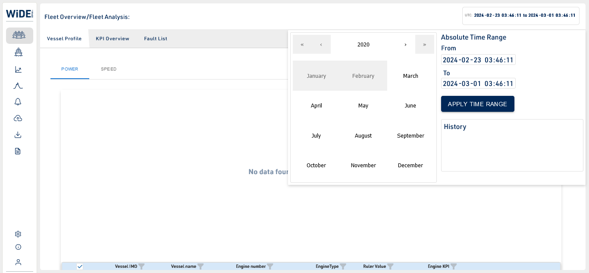
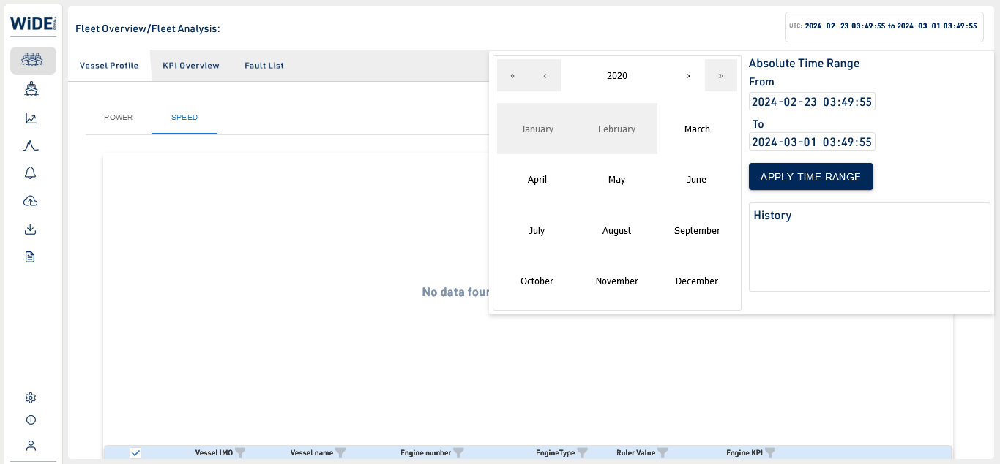

Started
Mar 1, 2024 07:22:22 am
Ended
Mar 1, 2024 09:38:33 am
Features Passed
9
Features Failed
5
Features
Scenarios
Steps
Timeline
System/Environment
| Name | Value |
|---|---|
| ProjectName | Serenity BDD Test |
| Browser | chrome |
| os | Windows |
-
About Screen
7:22:24 am / 00:02:57:481 Pass
About Screen
03.01.2024 7:22:24 am 03.01.2024 7:25:21 am 00:02:57:481 · #test-id=1PassTo test the About screen launching in the WinGD ApplicationGiven Select About icon form Left side menu -
Alarm List
7:25:21 am / 00:04:25:115 Fail
Alarm List
03.01.2024 7:25:21 am 03.01.2024 7:29:46 am 00:04:25:115 · #test-id=86FailTo test the Alarm screen in the WinGD ApplicationGiven Select Alarmlist icon form Left side menustarter.Cloud.Stepdefinitions.Alarmlisttest.beforeorafter(io.cucumber.java.Scenario)To_test_the_Alarm_screen_in_the_WinGD_Application -
Login to WinGD Application
7:29:47 am / 00:02:47:915 Pass
Login to WinGD Application
03.01.2024 7:29:47 am 03.01.2024 7:32:34 am 00:02:47:915 · #test-id=171PassTo test the Login scenario to the WinGD ApplicationGiven Login to the WinGD Application -
Basic Auth
7:32:35 am / 00:02:03:441 Fail
Basic Auth
03.01.2024 7:32:35 am 03.01.2024 7:34:38 am 00:02:03:441 · #test-id=256FailTo test the Basic Auth APIGiven I look up for token generation1Step undefined -
Data Reporting
7:34:38 am / 00:02:53:077 Pass
Data Reporting
03.01.2024 7:34:38 am 03.01.2024 7:37:31 am 00:02:53:077 · #test-id=341PassTo test the Data Reporting screen launching in the WinGD ApplicationGiven Select Data Reporting icon form Left side menu -
Data Downloader screen
7:37:31 am / 00:05:40:651 Fail
Data Downloader screen
03.01.2024 7:37:31 am 03.01.2024 7:43:12 am 00:05:40:651 · #test-id=426PassTo test the Data Downloader screen in the WinGD ApplicationGiven Select Data downloader icon form Left side menuFailTo test the Data Downloader screen in the WinGD ApplicationGiven Select Data downloader icon form Left side menustarter.Cloud.Stepdefinitions.Datadownloadertest.beforeorafter(io.cucumber.java.Scenario)To_test_the_Data_Downloader_screen_in_the_WinGD_Application -
Engine Overview
7:43:12 am / 00:02:53:565 Pass
Engine Overview
03.01.2024 7:43:12 am 03.01.2024 7:46:05 am 00:02:53:565 · #test-id=595PassTo test the Engine Overview screen launching in the WinGD ApplicationGiven Select Engine Overview icon form Left side menu -
Fast Data Binfile Uploader
7:46:05 am / 00:02:53:651 Pass
Fast Data Binfile Uploader
03.01.2024 7:46:05 am 03.01.2024 7:48:59 am 00:02:53:651 · #test-id=680PassTo test the Fast Data bin file uploader screen in the WinGD ApplicationGiven Select Fastdata uploader icon form Left side menu -
Fast Data Chart
7:48:59 am / 00:02:39:406 Fail
Fast Data Chart
03.01.2024 7:48:59 am 03.01.2024 7:51:38 am 00:02:39:406 · #test-id=765FailTo test the Fast Data Chart screen in the WinGD ApplicationGiven Select Fastdatachart icon form Left side menustarter.Cloud.Stepdefinitions.Fastdatacharttest.beforeorafter(io.cucumber.java.Scenario)To_test_the_Fast_Data_Chart_screen_in_the_WinGD_Application -
Fleet Screen
7:51:38 am / 01:34:17:397 Fail
Fleet Screen
03.01.2024 7:51:38 am 03.01.2024 9:25:56 am 01:34:17:397 · #test-id=850FailTo test the Active Fault column color coding in fleetscreenGiven Verifying the Active Fault column color coding in Fleet Overview Screenstarter.Cloud.Stepdefinitions.Fleet_ActivefaltCC.beforeorafter(io.cucumber.java.Scenario)To_test_the_Active_Fault_column_color_coding_in_fleetscreen FailTo test the Breadcrumb from Fault list search in fleetAnalysis of Fleet OverviewGiven Verify the Selection of Fleetoverview from Fault list in Fleet Analysis Screenstarter.Cloud.Stepdefinitions.Fleet_Breadcrumb.beforeorafter(io.cucumber.java.Scenario)To_test_the_Breadcrumb_from_Fault_list_search_in_fleetAnalysis_of_Fleet_OverviewPassTo test the collapseAll selection scenario in fleetscreen launching in the WinGD ApplicationGiven Verifying Collapse All button functionality in Fleet Overview screenPassTo test the Data KPI column color coding in fleetscreenGiven Verifying the Data KPI col color coding in Fleet Overview ScreenFailTo test the Datepicker in fleetscreenGiven Selecting Date and Time Picker in Fleet Analysis Screenstarter.Cloud.Stepdefinitions.Fleet_DatePicker.beforeorafter(io.cucumber.java.Scenario)To_test_the_Datepicker_in_fleetscreenPassTo test the Engine KPI column color coding in fleetscreenGiven Verifying the Engine KPI column color coding in Fleet Overview ScreenPassTo test the Engine Number Column search bar by giving matching data in fleetscreenGiven Verify the Engine Number Column Search functionality in Fleet Overview screenFailTo test the Engine KPI Column search bar by giving matching data in fleetscreenGiven Verify the Engine KPI Column Search functionality in Fleet Overview screenstarter.Cloud.Stepdefinitions.Fleet_EngKPIsearch.beforeorafter(io.cucumber.java.Scenario)To_test_the_Engine_KPI_Column_search_bar_by_giving_matching_data_in_fleetscreenFailTo test the Engine Type Column search bar by giving matching data in fleetscreenGiven Verify the Engine Type Column Search functionality in Fleet Overview screenstarter.Cloud.Stepdefinitions.Fleet_Engtypesearch.beforeorafter(io.cucumber.java.Scenario)To_test_the_Engine_Type_Column_search_bar_by_giving_matching_data_in_fleetscreenPassTo test the IMO Number Column search bar by giving matching data in fleetscreenGiven Verify the IMO Number Column Search functionality in Fleet Overview screenFailTo test the Search in KPI Overview of fleetAnalysis in the Fleet OverviewGiven Verify the Search functionality in KPI Overview of Fleet Analysis Screenstarter.Cloud.Stepdefinitions.Fleet_KPI_Search.beforeorafter(io.cucumber.java.Scenario)To_test_the_Search_in_KPI_Overview__of_fleetAnalysis_in_the_Fleet_Overview
FailTo test the Breadcrumb from Fault list search in fleetAnalysis of Fleet OverviewGiven Verify the Selection of Fleetoverview from Fault list in Fleet Analysis Screenstarter.Cloud.Stepdefinitions.Fleet_Breadcrumb.beforeorafter(io.cucumber.java.Scenario)To_test_the_Breadcrumb_from_Fault_list_search_in_fleetAnalysis_of_Fleet_OverviewPassTo test the collapseAll selection scenario in fleetscreen launching in the WinGD ApplicationGiven Verifying Collapse All button functionality in Fleet Overview screenPassTo test the Data KPI column color coding in fleetscreenGiven Verifying the Data KPI col color coding in Fleet Overview ScreenFailTo test the Datepicker in fleetscreenGiven Selecting Date and Time Picker in Fleet Analysis Screenstarter.Cloud.Stepdefinitions.Fleet_DatePicker.beforeorafter(io.cucumber.java.Scenario)To_test_the_Datepicker_in_fleetscreenPassTo test the Engine KPI column color coding in fleetscreenGiven Verifying the Engine KPI column color coding in Fleet Overview ScreenPassTo test the Engine Number Column search bar by giving matching data in fleetscreenGiven Verify the Engine Number Column Search functionality in Fleet Overview screenFailTo test the Engine KPI Column search bar by giving matching data in fleetscreenGiven Verify the Engine KPI Column Search functionality in Fleet Overview screenstarter.Cloud.Stepdefinitions.Fleet_EngKPIsearch.beforeorafter(io.cucumber.java.Scenario)To_test_the_Engine_KPI_Column_search_bar_by_giving_matching_data_in_fleetscreenFailTo test the Engine Type Column search bar by giving matching data in fleetscreenGiven Verify the Engine Type Column Search functionality in Fleet Overview screenstarter.Cloud.Stepdefinitions.Fleet_Engtypesearch.beforeorafter(io.cucumber.java.Scenario)To_test_the_Engine_Type_Column_search_bar_by_giving_matching_data_in_fleetscreenPassTo test the IMO Number Column search bar by giving matching data in fleetscreenGiven Verify the IMO Number Column Search functionality in Fleet Overview screenFailTo test the Search in KPI Overview of fleetAnalysis in the Fleet OverviewGiven Verify the Search functionality in KPI Overview of Fleet Analysis Screenstarter.Cloud.Stepdefinitions.Fleet_KPI_Search.beforeorafter(io.cucumber.java.Scenario)To_test_the_Search_in_KPI_Overview__of_fleetAnalysis_in_the_Fleet_Overview PassTo test the Lastupdate in fleetscreenGiven Verifying the Lastupdate color coding in Fleet Overview ScreenPassTo test the Remaining Days column color coding in fleetscreenGiven Verifying the Remaining Days column color coding in Fleet Overview ScreenFailTo test the grid selection scenario in fleetscreen launching in the WinGD ApplicationGiven Selecting a grid in FleetOverview Screenstarter.Cloud.Stepdefinitions.selectFoGrid.beforeorafter(io.cucumber.java.Scenario)To_test_the_grid_selection_scenario_in_fleetscreen_launching_in_the_WinGD_ApplicationPassTo test the Ship Column search bar by giving matching data in fleetscreenGiven Verify the Ship Column Search functionality in Fleet Overview screenPassTo test the selected grid shown scenario in fleetscreen launching in the WinGD ApplicationGiven Verify the Show Selected items in Fleet Overview screenPassTo test the grid unselection scenario in fleetscreen launching in the WinGD ApplicationGiven Verify unselecting a grid in fleetOverview ScreenPassTo select the Vessel Profile scenario in fleetAnalysis launching in the WinGD ApplicationGiven Selecting Vessel Profile Icon in Fleet Analysis ScreenPassTo test the Vessel Icon in Fleet Overview screenGiven Selecting Vessel Icon in Fleet Overview ScreenPassTo test the zoomInzoomOut scenario in fleetscreen launching in the WinGD ApplicationGiven Verify zoomin and zoomout the map in fleetOverview ScreenPassTo test the navigation of Fault list in fleetAnalysis of Fleet OverviewGiven Verify the Navigation from Fault list to other screens in Fleet Analysis ScreenPassTo test the search bar by giving matching data in fleetscreenGiven Verify the Search functionality in Fleet Overview screenPassTo test the search bar by giving unmatching data in fleetscreen launching in the WinGD ApplicationGiven Verify the Search functionality without matching data in Fleet Overview screenPassTo test the Fault list search in fleetAnalysis of Fleet OverviewGiven Verify the Selection of Fault list Icon in Fleet Analysis ScreenPassTo test the fleet Analysis scenario in fleetscreen launching in the WinGD ApplicationGiven Selecting fleet analysis in fleetOverview ScreenPassTo test the KPI Overview of fleetAnalysis in the Fleet OverviewGiven Selecting KPI Overview in Fleet Analysis ScreenFailTo select the Power scenario in fleetAnalysis launching in the WinGD ApplicationGiven Selecting Power option in Fleet Analysis Screenstarter.Cloud.Stepdefinitions.Fleet_selectPower.beforeorafter(io.cucumber.java.Scenario)To_select_the_Power_scenario_in_fleetAnalysis_launching_in_the_WinGD_ApplicationFailTo select the Speed scenario in fleetAnalysis in the WinGD ApplicationGiven Selecting Speed Option in Fleet Analysis Screenstarter.Cloud.Stepdefinitions.Fleet_selectSpeed.beforeorafter(io.cucumber.java.Scenario)To_select_the_Speed_scenario_in_fleetAnalysis__in_the_WinGD_ApplicationPassTo test the Show All selection scenario in fleetscreen launching in the WinGD ApplicationGiven Selecting Show All option in fleetOverview Screen
PassTo test the Lastupdate in fleetscreenGiven Verifying the Lastupdate color coding in Fleet Overview ScreenPassTo test the Remaining Days column color coding in fleetscreenGiven Verifying the Remaining Days column color coding in Fleet Overview ScreenFailTo test the grid selection scenario in fleetscreen launching in the WinGD ApplicationGiven Selecting a grid in FleetOverview Screenstarter.Cloud.Stepdefinitions.selectFoGrid.beforeorafter(io.cucumber.java.Scenario)To_test_the_grid_selection_scenario_in_fleetscreen_launching_in_the_WinGD_ApplicationPassTo test the Ship Column search bar by giving matching data in fleetscreenGiven Verify the Ship Column Search functionality in Fleet Overview screenPassTo test the selected grid shown scenario in fleetscreen launching in the WinGD ApplicationGiven Verify the Show Selected items in Fleet Overview screenPassTo test the grid unselection scenario in fleetscreen launching in the WinGD ApplicationGiven Verify unselecting a grid in fleetOverview ScreenPassTo select the Vessel Profile scenario in fleetAnalysis launching in the WinGD ApplicationGiven Selecting Vessel Profile Icon in Fleet Analysis ScreenPassTo test the Vessel Icon in Fleet Overview screenGiven Selecting Vessel Icon in Fleet Overview ScreenPassTo test the zoomInzoomOut scenario in fleetscreen launching in the WinGD ApplicationGiven Verify zoomin and zoomout the map in fleetOverview ScreenPassTo test the navigation of Fault list in fleetAnalysis of Fleet OverviewGiven Verify the Navigation from Fault list to other screens in Fleet Analysis ScreenPassTo test the search bar by giving matching data in fleetscreenGiven Verify the Search functionality in Fleet Overview screenPassTo test the search bar by giving unmatching data in fleetscreen launching in the WinGD ApplicationGiven Verify the Search functionality without matching data in Fleet Overview screenPassTo test the Fault list search in fleetAnalysis of Fleet OverviewGiven Verify the Selection of Fault list Icon in Fleet Analysis ScreenPassTo test the fleet Analysis scenario in fleetscreen launching in the WinGD ApplicationGiven Selecting fleet analysis in fleetOverview ScreenPassTo test the KPI Overview of fleetAnalysis in the Fleet OverviewGiven Selecting KPI Overview in Fleet Analysis ScreenFailTo select the Power scenario in fleetAnalysis launching in the WinGD ApplicationGiven Selecting Power option in Fleet Analysis Screenstarter.Cloud.Stepdefinitions.Fleet_selectPower.beforeorafter(io.cucumber.java.Scenario)To_select_the_Power_scenario_in_fleetAnalysis_launching_in_the_WinGD_ApplicationFailTo select the Speed scenario in fleetAnalysis in the WinGD ApplicationGiven Selecting Speed Option in Fleet Analysis Screenstarter.Cloud.Stepdefinitions.Fleet_selectSpeed.beforeorafter(io.cucumber.java.Scenario)To_select_the_Speed_scenario_in_fleetAnalysis__in_the_WinGD_ApplicationPassTo test the Show All selection scenario in fleetscreen launching in the WinGD ApplicationGiven Selecting Show All option in fleetOverview Screen -
Fleet Overview
9:25:56 am / 00:03:17:322 Pass
Fleet Overview
03.01.2024 9:25:56 am 03.01.2024 9:29:13 am 00:03:17:322 · #test-id=3,287PassTo test the Fleet Overview screen in the WinGD ApplicationGiven Select Fleet overview icon form Left side menu -
Logout
9:29:13 am / 00:02:52:989 Pass
Logout
03.01.2024 9:29:13 am 03.01.2024 9:32:06 am 00:02:52:989 · #test-id=3,372PassTo test the Logout scenario to the WinGD ApplicationGiven Select Logout icon form Left side menu -
Settings
9:32:06 am / 00:02:53:487 Pass
Settings
03.01.2024 9:32:06 am 03.01.2024 9:35:00 am 00:02:53:487 · #test-id=3,457PassTo test the Settings screen in the WinGD ApplicationGiven Select Settings icon form Left side menu -
Trendchart
9:35:00 am / 00:03:33:637 Pass
Trendchart
03.01.2024 9:35:00 am 03.01.2024 9:38:33 am 00:03:33:637 · #test-id=3,542PassTo test the Trendchart screen in the WinGD ApplicationGiven Select Trendchart icon form Left side menu
-
org.openqa.selenium.NoSuchElementException
11 tests
org.openqa.selenium.NoSuchElementException
11 failedStatus Timestamp TestName Fail 07:25:21 am Given Select Alarmlist icon form Left side menu Alarm List.To test the Alarm screen in the WinGD Application.Given Select Alarmlist icon form Left side menuFail 07:40:24 am Given Select Data downloader icon form Left side menu Data Downloader screen.To test the Data Downloader screen in the WinGD Application.Given Select Data downloader icon form Left side menuFail 07:48:59 am Given Select Fastdatachart icon form Left side menu Fast Data Chart.To test the Fast Data Chart screen in the WinGD Application.Given Select Fastdatachart icon form Left side menuFail 07:51:38 am Given Verifying the Active Fault column color coding in Fleet Overview Screen Fleet Screen.To test the Active Fault column color coding in fleetscreen.Given Verifying the Active Fault column color coding in Fleet Overview ScreenFail 07:54:08 am Given Verify the Selection of Fleetoverview from Fault list in Fleet Analysis Screen Fleet Screen.To test the Breadcrumb from Fault list search in fleetAnalysis of Fleet Overview.Given Verify the Selection of Fleetoverview from Fault list in Fleet Analysis ScreenFail 08:03:39 am Given Selecting Date and Time Picker in Fleet Analysis Screen Fleet Screen.To test the Datepicker in fleetscreen.Given Selecting Date and Time Picker in Fleet Analysis ScreenFail 08:13:17 am Given Verify the Engine KPI Column Search functionality in Fleet Overview screen Fleet Screen.To test the Engine KPI Column search bar by giving matching data in fleetscreen.Given Verify the Engine KPI Column Search functionality in Fleet Overview screenFail 08:22:32 am Given Verify the Search functionality in KPI Overview of Fleet Analysis Screen Fleet Screen.To test the Search in KPI Overview of fleetAnalysis in the Fleet Overview.Given Verify the Search functionality in KPI Overview of Fleet Analysis ScreenFail 08:32:08 am Given Selecting a grid in FleetOverview Screen Fleet Screen.To test the grid selection scenario in fleetscreen launching in the WinGD Application.Given Selecting a grid in FleetOverview ScreenFail 09:15:14 am Given Selecting Power option in Fleet Analysis Screen Fleet Screen.To select the Power scenario in fleetAnalysis launching in the WinGD Application.Given Selecting Power option in Fleet Analysis ScreenFail 09:18:58 am Given Selecting Speed Option in Fleet Analysis Screen Fleet Screen.To select the Speed scenario in fleetAnalysis in the WinGD Application.Given Selecting Speed Option in Fleet Analysis Screen -
org.openqa.selenium.ElementClickInterceptedException
1 tests
org.openqa.selenium.ElementClickInterceptedException
1 failedStatus Timestamp TestName Fail 08:16:05 am Given Verify the Engine Type Column Search functionality in Fleet Overview screen Fleet Screen.To test the Engine Type Column search bar by giving matching data in fleetscreen.Given Verify the Engine Type Column Search functionality in Fleet Overview screen